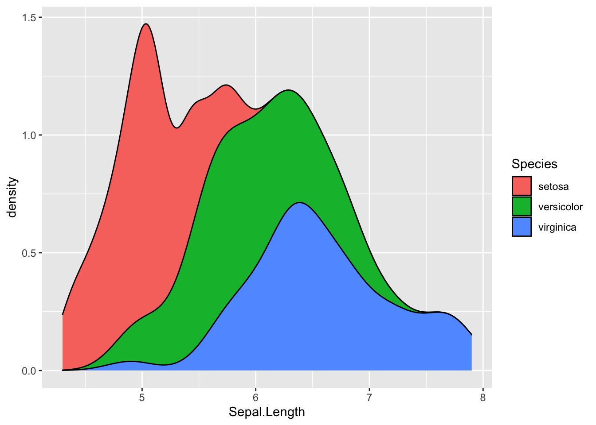
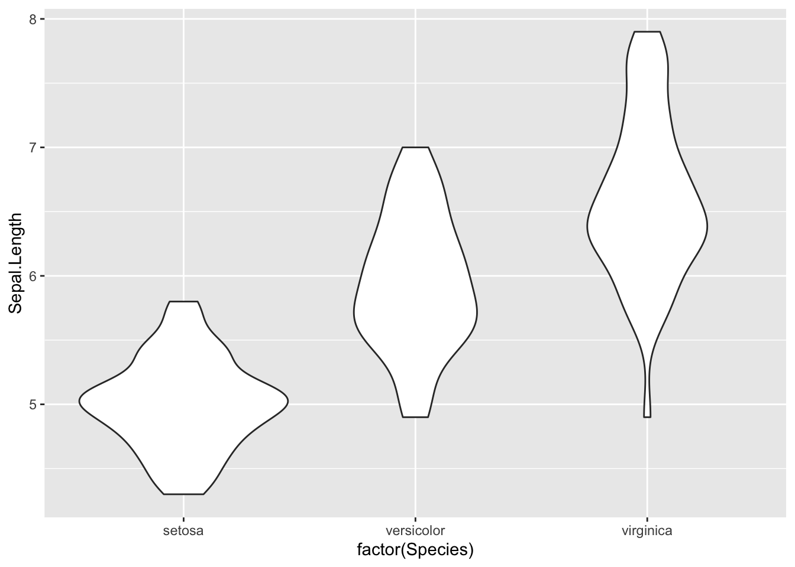
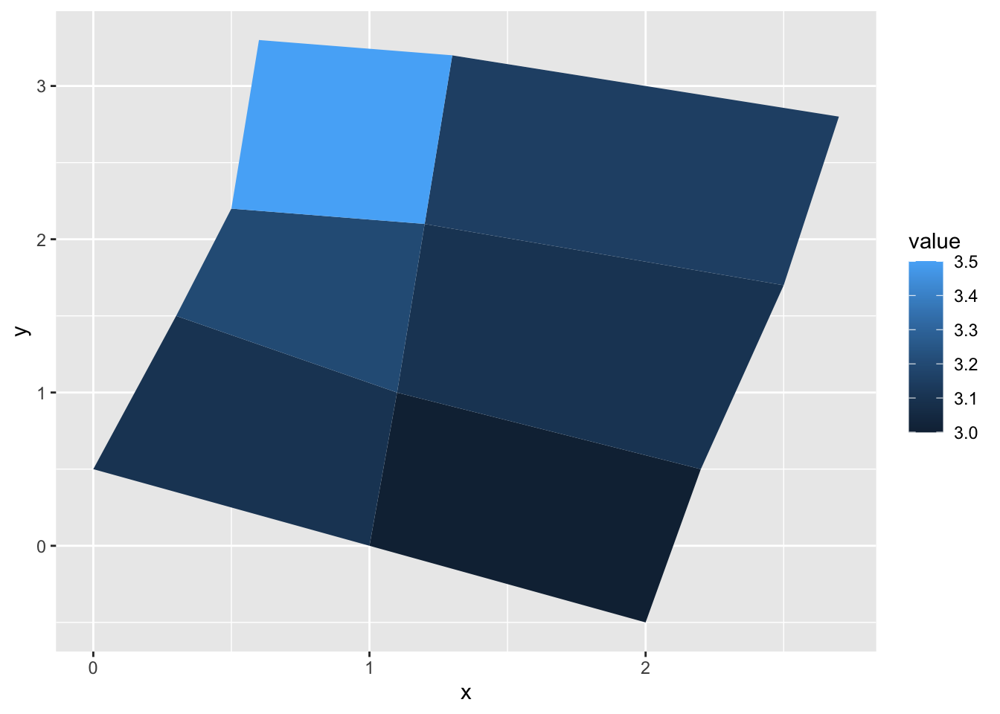
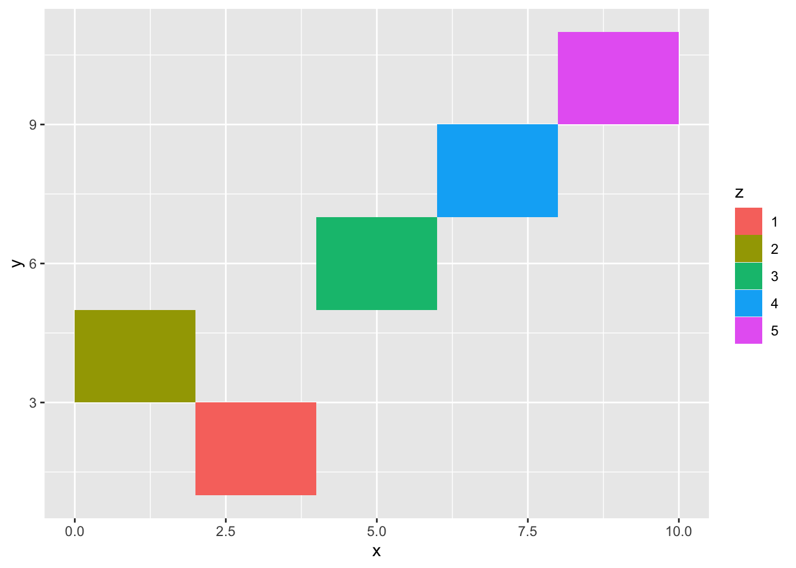

81 Examples
Now that we have covered the basics of these geoms, let’s take a look at a few examples and use cases of these geoms to see how they work:
81.1 Density Plots
Let’s use the iris data set from R to explore the distribution of sepal widths using the density plot.
We can first create a basic density plot:
ggplot(iris, aes(x=Sepal.Length)) +geom_density()
ggplot(iris, aes(x = Sepal.Length)) + geom_density(aes(color = Species))We can also customize the density plots by using linetype="dashed" or fill colors. A useful option would be to use partial fill in case you want to be able to see the background like this:
ggplot(iris, aes(x=Sepal.Length)) + geom_density(aes(fill=Species), alpha=0.5)
ggplot(iris, aes(x=Sepal.Length)) + geom_density(aes(fill=Species), position = "stack")Note- Density plots can also be created using baser functions but are much easier to customize and provides more options if made using ggplot2.
81.2 Violin Plots
Violin plots capture the best of box plots and density plots- they are both aesthetically pleasing and easy to interpret. Just as box plots, violin plots make comparing data very easy and at the same time, show the variations in data.
We will again use the iris data set, but this time we will compare Sepal widths using violin plots. We will have to use Species as a factor to create separate plots for the different species.
ggplot(iris, aes(factor(Species), Sepal.Length)) + geom_violin()
We can use coord_flip to rotate the plot:
ggplot(iris, aes(factor(Species), Sepal.Length)) + geom_violin() + coord_flip()Just like density plots, you can make these more aesthetic by using fill:
ggplot(iris, aes(factor(Species), Sepal.Length)) + geom_violin(aes(fill=Species)) You can also show quartiles on these plots by using the
You can also show quartiles on these plots by using the draw_quantiles argument:
ggplot(iris, aes(factor(Species), Sepal.Length)) + geom_violin(aes(fill=Species), draw_quantiles = c(0.25, 0.5, 0.75))If you want to be more specific and want to show summary statistics on the violin plot itself, you can add that too:
#To show the mean
ggplot(iris, aes(factor(Species), Sepal.Length)) + geom_violin(aes(fill=Species)) + stat_summary(fun = mean)
#To plot the median
ggplot(iris, aes(factor(Species), Sepal.Length)) + geom_violin(aes(fill=Species)) + stat_summary(fun = median)Note: Violin plots can be customized in a variety of ways including adding boxplots over the violin plot(using +geom_boxplot()) or adding points (using + geom_dotplot() or + geom_jitter()). The latter is especially useful for analyzing outliers.
81.3 Polygons
Polygons are extremely useful when working with map or geospatial data. They can be thought of as geom_path() with connected start and end points and are colored inside(using the “fill” aesthetic property).
Since we are creating random polygons, we will first start by building our data. This code block to create the data has been sourced directly from the ggplot2 documentation website.
We have to create the two data frames- one containing the coordinates and another one containing the values for each respective polygon. These two would be linked using a third “id” column.
ids <- factor(c("1.1", "2.1", "1.2", "2.2", "1.3", "2.3"))
values <- data.frame(
id = ids,
value = c(3, 3.1, 3.1, 3.2, 3.15, 3.5)
)Now we can create the positions data frame :
positions <- data.frame(
id = rep(ids, each = 4),
x = c(2, 1, 1.1, 2.2, 1, 0, 0.3, 1.1, 2.2, 1.1, 1.2, 2.5, 1.1, 0.3,
0.5, 1.2, 2.5, 1.2, 1.3, 2.7, 1.2, 0.5, 0.6, 1.3),
y = c(-0.5, 0, 1, 0.5, 0, 0.5, 1.5, 1, 0.5, 1, 2.1, 1.7, 1, 1.5,
2.2, 2.1, 1.7, 2.1, 3.2, 2.8, 2.1, 2.2, 3.3, 3.2)
)The next step would be to merge the two(the polygon coordinates and values) to create our final data to be plotted:
Finally, we can plot the polygon using geom_polygon(). Note that we use the group aesthetic to tell R which coordinates we want grouped together to form a polygon.
ggplot(data, aes(x=x, y=y)) + geom_polygon(aes(fill=value, group=id))
Now that we know how to create simple, basic polygons, we can take a look at drawing maps using geom_polygon() by drawing boundaries for regions.
We can take the data from the maps package in R. We will use the map_data() function to turn the data into a data frame. Right now we are only concerned with the counties in New York so we will pick those regions.
df <- map_data("county", "new york") %>%
select(long , lat, group, id = subregion)
head(df)
#> long lat group id
#> 1 -73.78550 42.46763 1 albany
#> 2 -74.25533 42.41034 1 albany
#> 3 -74.25533 42.41034 1 albany
#> 4 -74.27252 42.41607 1 albany
#> 5 -74.24960 42.46763 1 albany
#> 6 -74.22668 42.50774 1 albanyWe extracted 4 variables from the package- - long(the longitude) and lat(the latitude) which will be considered vertices of the polygon - id which contains the names of these regions - groups which identifies grouped regions(if a region is covered over multiple islands)
Lets take a quick look at the data by making a scatter plot. This will plot the vertices(corner) of each polygon(so counties in this case).
ggplot(df, aes(long, lat)) +
geom_point() Finally we can turn it into a map by using geom_polygon() like this:
ggplot(df, aes(long, lat, group = group)) +
geom_polygon(fill = "lightblue", colour = "blue2") 81.4 Rectangles
First, we will start by creating random rectangles with geom_tile().
We will need an arbitrary data frame to parameterize the rectangle with the center of tile and size. The section of code used to construct the data frames has been sourced directly from the documentation page for geom_tile.
df <- data.frame(
x = c(3, 1, 5, 7, 9),
y = c(2, 4, 6, 8, 10),
z = factor(rep(1:5)),
w = rep(c(1, 6), each = 5)
)Then we can plot it:

Or if we use geom_rect, we will have to use the four corners of the rectangle(xmin, xmax, ymin, ymax) as the parameters instead.
ggplot(df, aes(xmin = x - w / 2, xmax = x + w / 2, ymin = y, ymax = y + 1)) + geom_rect(aes(fill = z))Finally, geom_raster is the most ideal when all tiles are of the same size and is considered much faster performance wise. We can use it to create a surface like this:
df <- expand.grid(x = 0:5, y = 0:5)
z <- factor(rep(1:5))
df$z <- runif(nrow(df))
ggplot(df, aes(x, y, fill = z)) + geom_raster()We can also use interpolate=TRUE to smooth the surface (which is more useful when the goal is to render images)
ggplot(df, aes(x, y, fill = z)) + geom_raster(interpolate = TRUE)The most common use of rectangles is to create surfaces or with map data or heat maps.